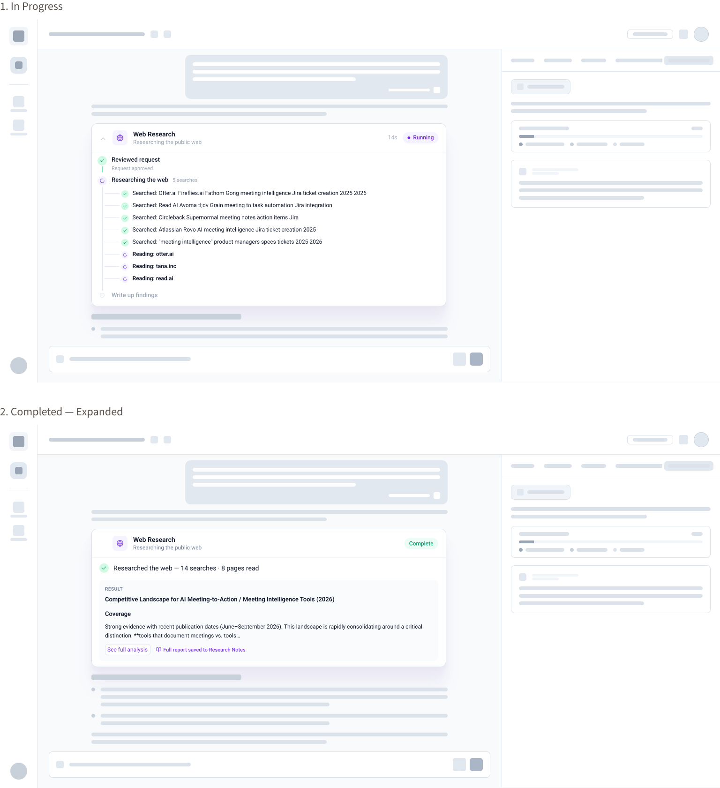

01 · Context on screen
Users needed to see connected tools, Jira, GitHub, Slack, before they would start a draft. Hidden data felt like guessing.
Product Studio · AI product management
Allstacks is a Series A startup building AI workflows & tools for product and engineering enterprise teams. Product Studio is the 0-to-1 conversational experience that turns rough ideas into build-ready technical specs, grounded in codebase analysis, customer feedback, and delivery metrics to help teams identiufy what to build next.

03 · The problem
Project managers were burning time, and tokens, on vague requirements. The artifact looked like a spec. It did not contain the context engineers actually need: what the code already does, what customers asked for, what delivery history would block the plan.
AI tools start from a blank window. Product Studio had to work differently, small, cited, and grounded in each client Context Graph. Otherwise, it's just another expensive guess.
04 · Research & discovery
We worked with project managers to map the current spec path, then designed an AI flow that had to feel fast, clear, and trustworthy. I named three personas, enterprise product roles, mid-size product leaders, and internal stakeholders, and compared those assumptions with actual usage data from Datadog and Pendo.
Users needed to see connected tools, Jira, GitHub, Slack, before they would start a draft. Hidden data felt like guessing.
A readiness number was not enough. Each finding had to cite the ticket, commit, or call behind it, or teams would not act.
PMs wanted to go from a rough idea to a structured plan without a week of research. “Easy button” was the job, not a chatbot toy.
Enterprise teams needed compliance and analytics before facing an exec review. Startup leaders just wanted speed, with no surprises later.
Need a hub for compliance, reporting, and internal politics. Will not ship a spec they cannot defend.
Need technical constraints and stakeholder feedback in the spec so they can pivot without rework.
Need to trust the plan before it goes to build. Constraints from engineering and design have to show up early.
We checked these against analytics after launch. The workflow was shared. The proof each role needed was not.

05 · The key insight
A chatbot that writes fast isn't actually useful if you can't tell where its answers came from. So we made evidence the backbone of the whole product: tools connected right from the welcome screen, findings that cite their sources on the readiness report, and syncing to Jira only once a plan could actually survive a real review.
06 · Process
Due to the complexity of the product, we introduced a hybrid UI that combines chat and traditional UI elements to make certain tasks faster and easier, while helping to build trust in the agent.

Trust failed when the chat went quiet. A spinner said “thinking.” It did not say whether the agent had opened Jira, GitHub, or a customer call.
While the agent works, the chat shows the actual steps: Reviewed request, then each search it ran, then which pages it is reading. Users see if it is looking in the right places before they see an answer.
The research chip UI element has different states to follow the agent's progress and help build trust in the output:


I built and maintained a unified design system in Figma and Vue 3, and created interactive desktop prototypes using real components to validate design ideas on the browser. This helped the team to better understand the interaction and experience. It also has made it easier to evolve our design system by testing our components and identifying where they may need to be adapted. The engineering handoffs are much more precise now.
Here are two examples:
07 · Validation & outcome
On the live product, teams report faster plan creation and cheaper token use because the graph sends small, cited requests instead of putting everything into one huge AI prompt.
The research chip UI element has helped to build trust in the agent and improve the overall user experience,
What used to take us a full day with Claude, we now do in two to three hours. We came up with a complete work tree: epics, stories, everything the engineering team needed to start building. CTO, co-founder
Visit Product Studio →08 · Reflection
Interviews kept returning to the same gap. Chat could start a plan, but PMs would not act on it until they could see the work: which tools were connected, which queries ran, which ticket or call sat behind a score.
That is how the hybrid UI earned its place. Prototypes confirmed it. People trusted the output when they could inspect the trail without leaving the thread.
{kind=link}